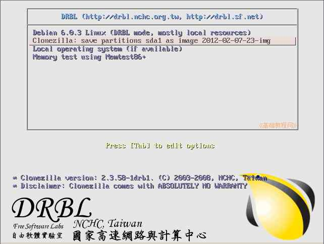
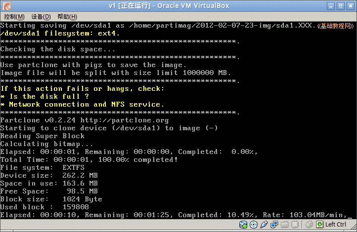
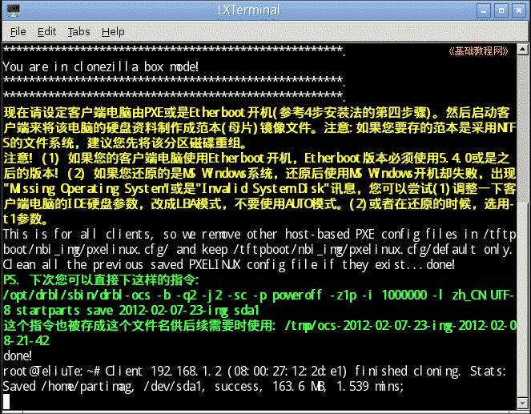
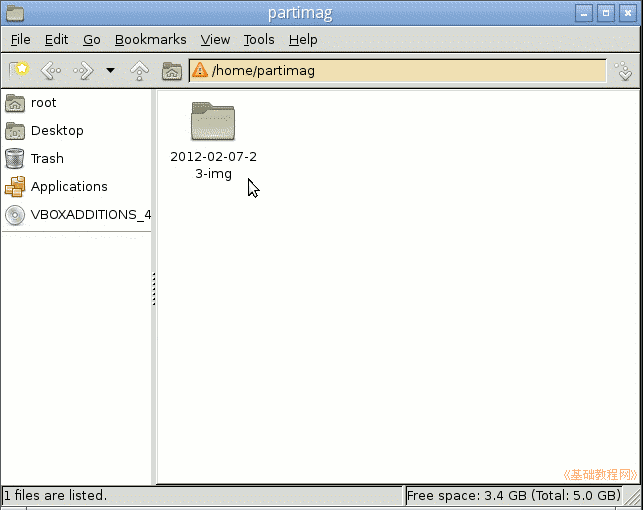

DRBL 操作指南
作者：TeliuTe 来源：基础教程网
七、保存镜像 返回目录 下一课服务器设置好以后，启动客户机自动进入备份界面；
1、备份系统
1）启动客户机，在启动菜单处自动进入 Clonezilla 再生龙备份菜单；

2）耐心等待进入系统备份界面，显示备份速度、所需时间等信息；

3）完成后系统自动重启动，服务器上显示成功信息；

4）备份文件保存在服务器的 /home/partimag 文件夹里，是一个以相同名称的文件夹；

本节学习了保存镜像的基础知识，如果你成功地完成了练习，请继续学习下一课内容；
本教程由86团学校TeliuTe制作|著作权所有
基础教程网：http://teliute.org/
美丽的校园……
转载和引用本站内容，请保留版权信息和本站链接。